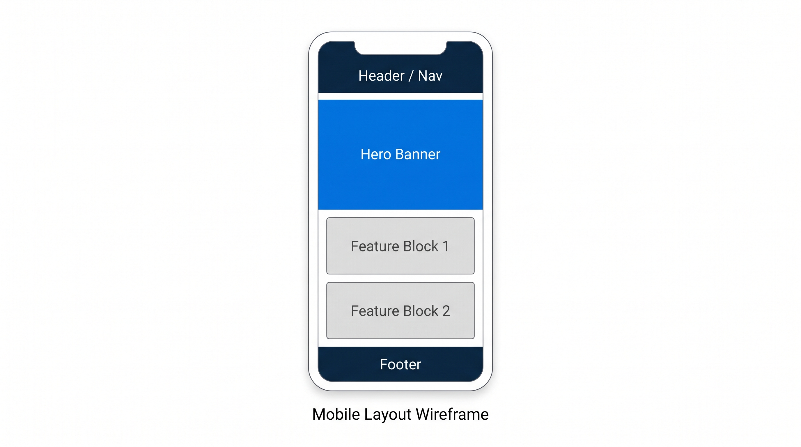
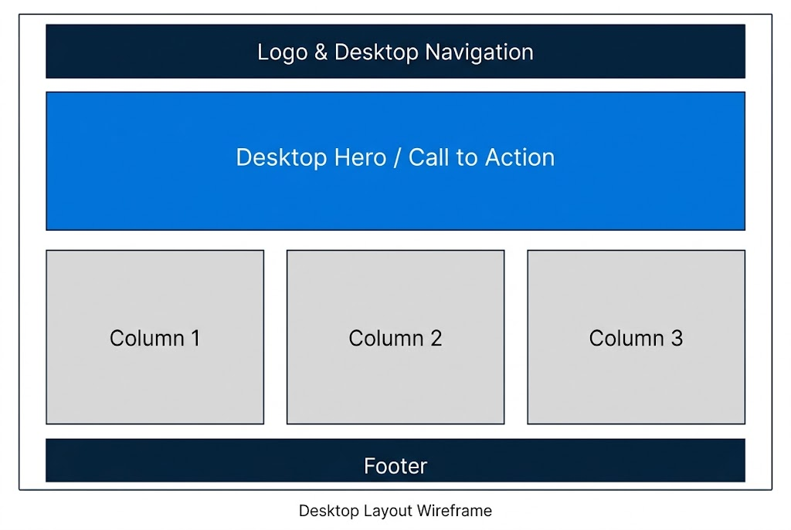

1. Site Name and Purpose
Site name: Tech & Security Hub
The name describes a central resource for practical technology and commercial security guidance. The site will help individuals and small businesses compare security cameras, plan networked monitoring systems, and choose smart equipment suited to their properties.
Services will include product specifications and comparisons, step-by-step setup guides, installation checklists, monitoring recommendations, and a contact form for custom quotes or technical consultations.
Optional domain: techsecurityhub.org
2. Audience Scenarios
- What outdoor security camera setup will work reliably in a high-temperature environment?
- How can I request a custom product quote or technical consultation for my property?
3. Color Schema
The page uses a deep navy primary color, electric blue accent, and off-white background.
- Primary: #0a2540
Deep navy for the header, footer, and major headings. - Secondary: #0073e6
Electric blue for accents, borders, and highlights. - Background: #f4f6f8
Off-white for the page background.
4. Typography
Montserrat (weights 600 and 700) is used for headings from <h1> through <h3>.
Open Sans (weights 400 and 600) is used for body text, lists, and captions.
5. Wireframes
Structural sketches for the proposed homepage at mobile and desktop widths.

